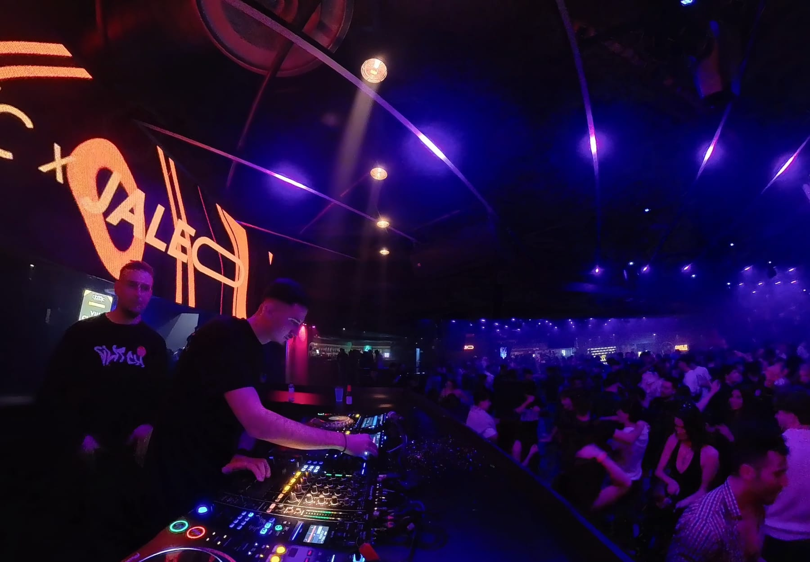

Press kit · 2026
DJ urbano · Maresme, Barcelona
Bio
DJ urbano del Maresme con una propuesta fresca, versátil y enfocada a la pista. Sus sesiones combinan reggaetón, música urbana, hits comerciales, afro, house y pachanga, creando un sonido actual y enérgico.
- Reggaetón
- Urbano
- Hits comerciales
- Afro
- House
- Pachanga
Booking
- @djroccolive
- SoundCloud
- soundcloud.com/djroccolive
- YouTube
- @djroccolive
- TikTok
- @djroccolive
Del reggaetón al house sin que la pista se enfríe
DJ Rocco · Press kit1 / 2